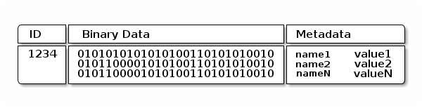
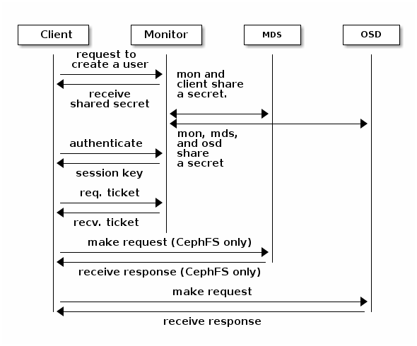
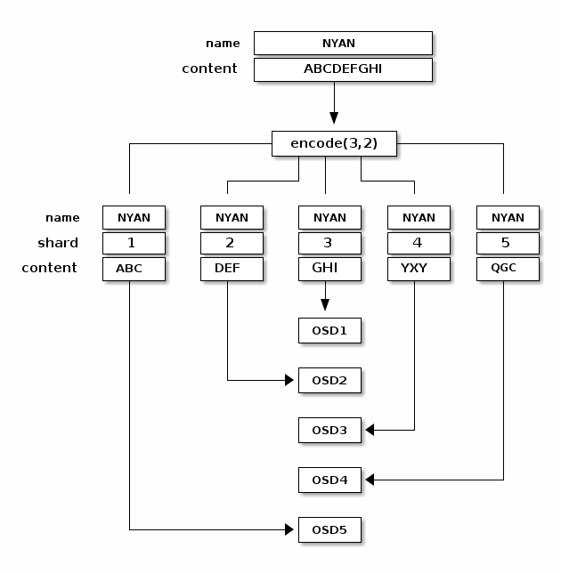
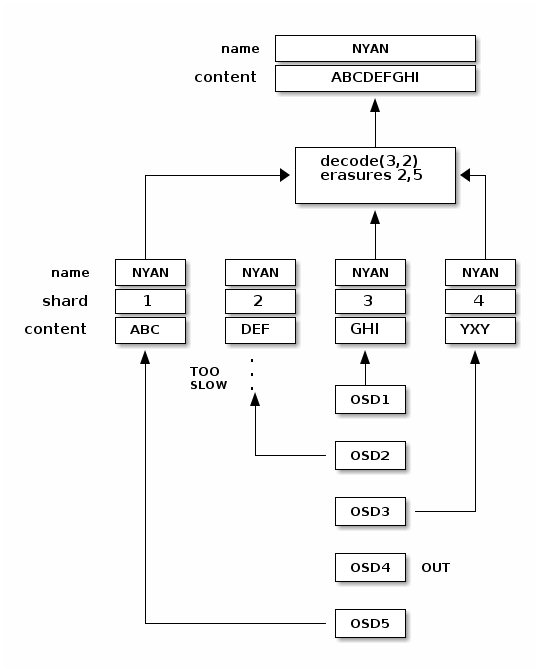
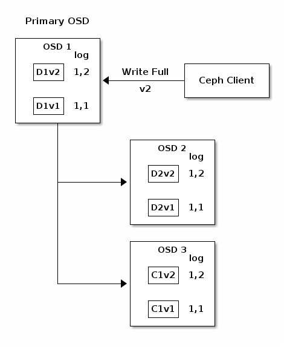
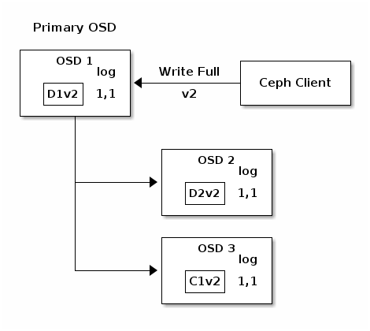
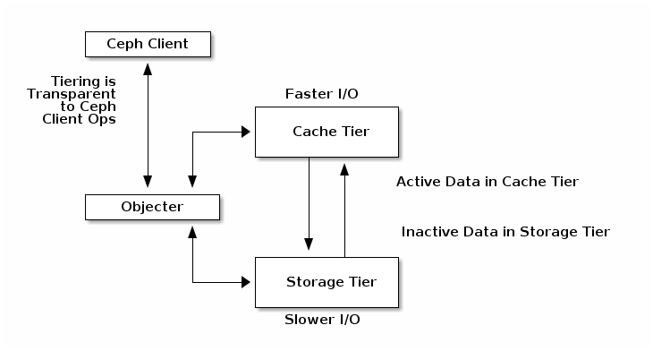
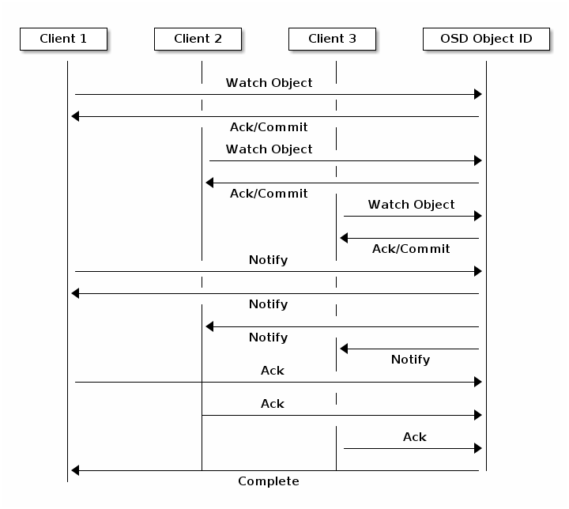
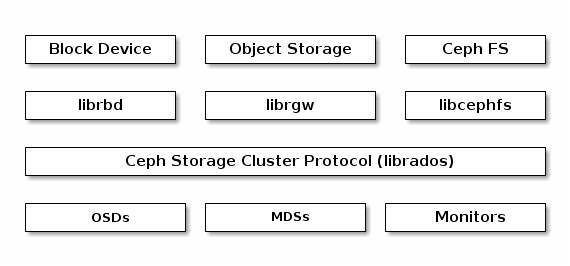
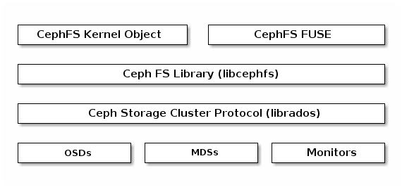

体系结构¶
Ceph 独一无二地用统一的系统提供了对象、块、和文件存储功能，它可靠性高、管理简便、并且是自由软件。 Ceph 的强大足以改变贵公司的 IT 基础架构、和管理海量数据。 Ceph 可提供极大的伸缩性——供成千用户访问 PB 乃至 EB 级的数据。 Ceph 节点以普通硬件和智能守护进程作为支撑点， Ceph 存储集群组织起了大量节点，它们之间靠相互通讯来复制数据、并动态地重分布数据。

Ceph 存储集群¶
Ceph 提供了一个可无限伸缩的 Ceph 存储集群，它基于 RADOS ，见论文 RADOS - A Scalable, Reliable Storage Service for Petabyte-scale Storage Clusters 。
Ceph 存储集群包含两种类型的守护进程：

Ceph 监视器维护着集群运行图的主副本。一个监视器集群确保了当某个监视器失效时的高可用性。存储集群客户端向 Ceph 监视器索取集群运行图的最新副本。
Ceph OSD 守护进程检查自身状态、以及其它 OSD 的状态，并报告给监视器们。
存储集群的客户端和各个 Ceph OSD 守护进程使用 CRUSH 算法高效地计算数据位置，而不是查询某个表。它的高级功能包括：基于 librados 的原生存储接口、和多种基于 librados 的服务接口。
数据的存储¶
Ceph 存储集群从 Ceph 客户端接收数据——不管是来自 Ceph 块设备、 Ceph 对象存储、 Ceph 文件系统、还是基于 librados 的自定义实现——并存储为对象。对象是相应文件系统中的文件，但它是作为对象存储设备使用的，这些读/写操作是 OSD 守护进程处理的。

OSD 在扁平的命名空间内把所有数据存储为对象（也就是没有目录层次）。对象包含一个标识符、二进制数据、和由名字/值配对组成的元数据，语义完全取决于 Ceph 客户端。例如， CephFS 用元数据存储文件属性，如文件所有者、创建日期、最后修改日期等等。

Note
一个对象 ID 不止在本地唯一 ，它在整个集群内都是唯一的。
伸缩性和高可用性¶
在传统架构里，客户端沟通中央化的组件（如网关、中间件、 API 、前端等等），它作为一个复杂子系统的单接触点，它引入单故障点的同时，也压制了性能和伸缩性（就是说如果中央化组件挂了，整个系统就挂了）。
Ceph 消除了集中网关，允许客户端直接和 OSD 守护进程通讯。 OSD 守护进程自动在其它 Ceph 节点上创建对象复制品来确保数据安全和高可用性；为保证高可用性，监视器也实现了集群化。为消除中央集权制， Ceph 使用了 CRUSH 算法。
CRUSH 简介¶
Ceph 客户端和 OSD 守护进程都用 CRUSH 算法来按需计算对象的位置信息，而不是查询某个集中的表。和以往方法相比， CRUSH 的数据管理机制更好，它很干脆地把某些工作丢给集群内的所有客户端和 OSD 来处理，因此具有极大的伸缩性。 CRUSH 用智能数据复制确保弹性，更能适应超大规模存储。下列几段描述了 CRUSH 如何工作，更详细的机制请参阅论文： CRUSH - 可控、可伸缩、分布式地归置多副本数据 。
集群运行图¶
Ceph 依赖于 Ceph 客户端和 OSD ，因为它们知道集群的拓扑，这个拓扑由 5 张图共同描述，统称为“集群运行图”：
- 监视器图： 包含集群的 fsid 、位置、名字、地址和端口，也包括当前时间结、此图何时创建、最近修改时间。要查看监视器图，用 ceph mon dump 命令。
- OSD 图： 包含集群 fsid 、此图何时创建、最近修改时间、存储池列表、副本数量、归置组数量、 OSD 列表及其状态（如 up 、 in ）。要查看OSD运行图，用 ceph osd dump 命令。
- 归置组图： 包含归置组版本、其时间戳、最新的 OSD 图时间结、占满率、以及各归置组详情，像归置组 ID 、 up set 、 acting set 、 PG 状态（如 active+clean ），和各存储池的数据使用情况统计。
- CRUSH 图： 包含存储设备列表、失败域树状结构（如设备、主机、机架、行、房间、等等）、和存储数据时如何利用此树状结构的规则。要查看 CRUSH 规则，执行 ceph osd getcrushmap -o {filename} 命令；然后用 crushtool -d {comp-crushmap-filename} -o {decomp-crushmap-filename} 反编译；然后就可以用 cat 或编辑器查看了。
- MDS 图： 包含当前 MDS 图的时间结、此图创建于何时、最近修改时间，还包含了存储元数据的存储池、元数据服务器列表、还有哪些元数据服务器是 up 且 in 的。要查看 MDS 图，执行 ceph mds dump 。
各运行图维护着各自运营状态的变更， Ceph 监视器维护着一份集群运行图的主拷贝，包括集群成员、状态、变更、以及 Ceph 存储集群的整体健康状况。
高可用监视器¶
Ceph 客户端读或写数据前必须先连接到某个 Ceph 监视器、获得最新的集群运行图副本。一个 Ceph 存储集群只需要单个监视器就能运行，但它就成了单故障点（即如果此监视器当机， Ceph 客户端就不能读写数据了）。
为增强可靠性和容错能力， Ceph 支持监视器集群；在一个监视器集群内，延时以及其它错误会导致一到多个监视器滞后于集群的当前状态，因此， Ceph 的各监视器例程必须就集群的当前状态达成一致。为此， Ceph 总是使用大多数监视器（如： 1 、 2:3 、 3:5 、 4:6 等等）和 Paxos 算法就集群的当前状态达成一致。
关于配置监视器的详情，见监视器配置参考。
高可用性认证¶
为辨明用户并防止中间人攻击， Ceph 用 cephx 认证系统来认证用户和守护进程。
Note
cephx 协议不解决传输加密（如 SSL/TLS ）、或者存储加密问题。
Cephx 用共享密钥来认证，即客户端和监视器集群各自都有客户端密钥的副本。这样的认证协议使所有参与者没有展现密钥就能相互证明，就是说集群确信用户可处理密钥、而且用户相信集群有密钥的副本。
Ceph 一个主要伸缩功能就是避免了对象存储的中央接口，这就要求 Ceph 客户端能直接和 OSD 交互。 Ceph 通过 cephx 认证系统保护数据，它也认证运行 Ceph 客户端的用户， cephx 协议运行机制类似 Kerberos 。
用户/参与者通过调用 Ceph 客户端来联系监视器，不像 Kerberos ，每个监视器都能认证用户、发布密钥，所以使用 cephx 时不会有单点故障或瓶颈。监视器返回一个类似 Kerberos 票据的认证数据结构，它包含一个可用于获取 Ceph 服务的会话密钥，会话密钥是用户的永久私钥自加密过的，只有此用户能从 Ceph 监视器请求服务。客户端用会话密钥向监视器请求需要的服务，然后监视器给客户端一个凭证用以向实际持有数据的 OSD 认证。 Ceph 的监视器和 OSD 共享相同的密钥，所以集群内任何 OSD 或元数据服务器都认可客户端从监视器获取的凭证，像 Kerberos 一样 cephx 凭证也会过期，以使攻击者不能用暗中得到的过期凭证或会话密钥。只要用户的私钥过期前没有泄露 ，这种认证形式就可防止中间线路攻击者以别人的 ID 发送垃圾消息、或修改用户的正常消息。
要使用 cephx ，管理员必须先设置好用户。在下面的图解里， client.admin 用户从命令行调用 ceph auth get-or-create-key 来生成一个用户及其密钥， Ceph 的认证子系统生成了用户名和密钥、副本存到监视器然后把此用户的密钥回传给 client.admin 用户，也就是说客户端和监视器共享着相同的密钥。
Note
client.admin 用户必须以安全方式把此用户 ID 和密钥交给用户。

要和监视器认证，客户端得把用户名传给监视器，然后监视器生成一个会话密钥、并且用此用户的密钥加密它，然后把加密的凭证回传给客户端，客户端用共享密钥解密载荷就可获取会话密钥。会话密钥在当前会话中标识了此用户，客户端再用此会话密钥签署过的用户名请求一个凭证，监视器生成一个凭证、用客户端的密钥加密它，然后回传给客户端，客户端解密此凭证，然后用它签署连接集群内 OSD 和元数据服务器的请求。

cephx 协议认证客户端机器和 Ceph 服务器间正在进行的通讯，二者间认证完成后的每条消息都用凭证签署过，监视器、 OSD 、元数据服务器都可用此共享的密钥来校验这些消息。

认证提供的保护位于 Ceph 客户端和服务器间，没有扩展到 Ceph 客户端之外。如果用户从远程主机访问 Ceph 客户端， Ceph 认证就不管用了，它不会影响到用户主机和客户端主机间的通讯。
关于如何配置，请参考 Cephx 配置指南；关于用户管理细节，请参考用户管理。
智能程序支撑超大规模¶
在很多集群化体系结构中，集群成员的主要目的都相似，集中式接口知道它能访问哪些节点，然后此中央接口通过一个两级调度把服务调给客户端，在 PB 到 EB 级系统中这个调度系统必将成为最大的瓶颈。
Ceph 消除了此瓶颈：其 OSD 守护进程和客户端都能感知集群，比如 Ceph 客户端、各 OSD 守护进程都知道集群内有哪些节点，这样 OSD 就能直接和其它 OSD 守护进程和监视器们通讯。另外， Ceph 客户端也能直接和 OSD 守护进程交互。
Ceph 客户端、监视器和 OSD 守护进程可以相互直接交互，这意味着 OSD 可以利用本地节点的 CPU 和内存执行那些有可能拖垮中央服务器的任务。这种设计均衡了计算资源，带来几个好处：
OSD 直接服务于客户端： 由于任何网络设备都有最大并发连接上限，规模巨大时中央化的系统其物理局限性就暴露了。 Ceph 允许客户端直接和 OSD 节点联系，这在消除单故障点的同时，提升了性能和系统总容量。 Ceph 客户端可按需维护和某 OSD 的会话，而不是一中央服务器。
OSD 成员和状态： Ceph OSD 加入集群后会持续报告自己的状态。在底层， OSD 状态为 up 或 down ，反映它是否在运行、能否提供服务。如果一 OSD 状态为 down 且 in ，表明 OSD 守护进程可能失败了；如果一 OSD 守护进程没在运行（比如崩溃了），它就不能亲自向监视器报告自己是 down 的。 Ceph 监视器能周期性地 ping OSD 守护进程，以确保它们在运行，然而它也能授权 OSD 进程去确认邻居 OSD 是否 down 了，并更新集群运行图、报告给监视器。这种机制意味着监视器还是轻量级进程。详情见监控 OSD 和心跳。
数据洗刷： 作为维护数据一致性和清洁度的一部分， OSD 能洗刷归置组内的数据。就是说， Ceph OSD 能比较对象元数据位于不同 OSD 上的几个副本的元数据，以捕捉 OSD 缺陷或文件系统错误（每天）。 OSD 也能做深度洗刷（每周），即按位比较对象中的数据，以找出轻度洗刷时未发现的硬盘坏扇区。关于洗刷配置见数据洗刷。
复制： 和 Ceph 客户端一样， OSD 也用 CRUSH 算法，但用于计算副本存到哪里（也用于重均衡）。一个典型的情形是，一客户端用 CRUSH 算法算出对象应存到哪里，并把对象映射到存储池和归置组，然后查找 CRUSH 图来确定此归置组的主 OSD 。
客户端把对象写入目标归置组的主 OSD ，然后这个主 OSD 再用它的 CRUSH 图副本找出用于放对象副本的第二、第三个 OSD ，并把数据复制到适当的归置组所对应的第二、第三 OSD （要多少副本就有多少 OSD ），最终，确认数据成功存储后反馈给客户端。

有了做副本的能力， OSD 守护进程就可以减轻客户端的复制压力，同时保证了数据的高可靠性和安全性。
动态集群管理¶
在伸缩性和高可用性一节，我们解释了 Ceph 如何用 CRUSH 、集群感知性和智能 OSD 守护进程来扩展和维护高可靠性。 Ceph 的关键设计是自治，自修复、智能的 OSD 守护进程。让我们深入了解下 CRUSH 如何运作，现代云存储基础设施如何动态地放置数据、重均衡、从错误中恢复。
关于存储池¶
Ceph 存储系统支持“池”概念，它是存储对象的逻辑分区。
Ceph 客户端从监视器获取一张集群运行图，并把对象写入存储池。存储池的 size 或副本数、 CRUSH 规则集和归置组数量决定着 Ceph 如何放置数据。

存储池至少可设置以下参数：
- 对象的所有权/访问权限；
- 归置组数量；以及，
- 使用的 CRUSH 规则集。
详情见调整存储池。
PG 映射到 OSD¶
各归置组都有很多归置组， CRUSH 动态的把它们映射到 OSD 。 Ceph 客户端要存对象时， CRUSH 将把各对象映射到某个归置组。
把对象映射到归置组在 OSD 和客户端间创建了一个间接层。由于 Ceph 集群必须能增大或缩小、并动态地重均衡。如果要让客户端“知道”哪个 OSD 有哪个对象，就会导致客户端和 OSD 密耦合；相反， CRUSH 算法把一堆对象映射到一归置组、然后再把各归置组映射到一或多个 OSD ，这一间接层可以让 Ceph 在 OSD 守护进程和底层设备上线时动态地重均衡。下列图表描述了如何用 CRUSH 把对象映射到归置组、再把归置组映射到 OSD 。

有了集群运行图副本和 CRUSH 算法，客户端就能精确地计算出到哪个 OSD 读、写某特定对象。
计算 PG ID¶
Ceph 客户端绑定到某监视器时，会索取最新的集群运行图副本，有了此图，客户端就能知道集群内的所有监视器、 OSD 、和元数据服务器。然而它对对象的位置一点也不了解。
对象位置是计算出来的。
客户端只需输入对象 ID 和存储池，此事简单： Ceph 把数据存在某存储池（如 liverpool ）中。当客户端想要存命名对象（如 john 、 paul 、 george 、 ringo 等等）时，它用对象名计算归置组（一个哈希值）、 OSD 号、存储池。 Ceph 按下列步骤计算 PG ID 。
- 客户端输入存储池 ID 和对象 ID （如 pool=”liverpool” 和 object-id=”john” ）；
- CRUSH 拿到对象 ID 并哈希它；
- CRUSH 用 OSD 数（如 58 ）对哈希值取模，这就是归置组 ID ；
- CRUSH 根据存储池名取得存储池 ID （如liverpool = 4 ）；
- CRUSH 把存储池 ID 加到PG ID（如 4.58 ）之前。
计算对象位置远快于查询定位， CRUSH 算法允许客户端计算对象应该存到哪里，并允许客户端连接存储此主 OSD 来存储或检索对象。
互联和子集¶
在前面的章节中，我们注意到 OSD 守护进程相互检查心跳并回馈给监视器；它们的另一行为叫“互联（ peering ）”，这是一种把一归置组内所有对象（及其元数据）所在的 OSD 带到一致状态的过程。事实上， OSD 守护进程会向监视器报告互联失败，互联问题一般会自行恢复，然而如果问题一直持续，你也许得参照互联失败排障解决。
Note
对状态达成一致并不意味着 PG 持有最新内容。
Ceph 存储集群被设计为至少存储两份（即 size = 2 ），这是保证数据安全的最小需求。为保证高可靠性， Ceph 存储集群应该至少保存一对象的两个副本（如 size = 3 且 min size = 2 ），这样才能在维持数据安全的同时、仍保持在 degraded 状态。
回想前面智能程序支撑超大规模中的图表，我们没明确地提 OSD 守护进程的名字（如 osd.0 、 osd.1 等等），而是称之为主、次、以此类推。按惯例，主 OSD 是 acting set 中的第一个 OSD ，而且它负责协调各归置组的互联进程，所以称之为主 OSD ；也只有它会接受客户端到某归置组的初始写入请求。
当一系列 OSD 负责一归置组时，这一系列的 OSD 就成为一个 acting set 。一个 acting set 可对应当前负责此归置组的一些 OSD ，或者说一些 OSD 在一些时间结上负责某个特定归置组。
OSD 守护进程作为 acting set 的一部分，不一定总在 up 状态。当一 OSD 在 acting set 中是 up 状态时，它就是 up set 的一部分。 up set 是个重要特征，因为某 OSD 失败时 Ceph 会把 PG 映射到其他 OSD 。
Note
在某 PG 的 acting set 中包含了 osd.25 、 osd.32 和 osd.61 ，第一个 osd.25 是主 OSD ，如果它失败了，第二个 osd.32 就成为主 OSD ， osd.25 会被移出 up set 。

纠删编码¶
纠删码存储池把各对象存储为 K+M 个数据块，其中有 K 个数据块和 M 个编码块。此存储池的尺寸为 K+M ，这样各块被存储到位于 acting set 中的 OSD ，块的位置也作为对象属性保存下来了。
比如一纠删码存储池创建时分配了五个 OSD （ K+M = 5 ）并容忍其中两个丢失（ M = 2 ）。
读出和写入编码块¶
当包含 ABCDEFGHI 的对象 NYAN 被写入存储池时，纠删编码功能把内容分割为三个数据块，只是简单地切割为三份：第一份包含 ABC 、第二份是 DEF 、最后是 GHI ，若内容长度不是 K 的倍数则需填充；此功能还会创建两个编码块：第四个是 YXY 、第五个是 GQC ，各块分别存入 acting set 中的 OSD 内。这些块以相同的名字（ NYAN ）存入对象、但是位于不同的 OSD 上；分块顺序也必须保留，被存储为对象的一个属性（ shard_t ）追加到名字后面。包含 ABC 的块 1 存储在 OSD5 上、包含 YXY 的块 4 存储在 OSD3 上。

从纠删码存储池中读取 NYAN 对象时，解码功能会读取三个块：包含 ABC 的块 1 ，包含 GHI 的块 3 和包含 YXY 的块 4 ，然后重建对象的原始内容 ABCDEFGHI 。解码功能被告知块 2 和 5 丢失了（被称为“擦除”），块 5 不可读是因为 OSD4 出局了； OSD2 是最慢的，其数据未被采纳。只要有三块读出就可以成功调用解码功能。

被中断的完全重写¶
在纠删码存储池中， up set 中的主 OSD 接受所有写操作，它负责把载荷编码为 K+M 个块并发送给其它 OSD 。它也负责维护归置组日志的一份权威版本。
在下图中，已创建了一个参数为 K = 2 + M = 1 的纠删编码归置组，存储在三个 OSD 上，两个存储 K 、一个存 M 。此归置组的 acting set 由 OSD 1 、OSD 2 、 OSD 3 组成。一个对象已被编码并存进了各 OSD ：块 D1v1 （即数据块号为 1 ，版本为 1 ）在 OSD 1 上、 D2v1 在 OSD 2 上、 C1v1 （即编码块号为 1 ，版本为 1 ）在 OSD 3 上。各 OSD 上的归置组日志都相同（即 1,1 ，表明 epoch 为 1 ，版本为 1 ）。

OSD 1 是主的，它从客户端收到了 WRITE FULL 请求，这意味着净载荷将会完全取代此对象，而非部分覆盖。此对象的版本 2 （ v2 ）将被创建以取代版本 1 （ v1 ）。 OSD 1 把净载荷编码为三块： D1v2 （即数据块号 1 、版本 2 ）将存入 OSD 1 、 D2v2 在 OSD 2 上、 C1v2 （即编码块号 1 版本 2 ）在 OSD 3 上，各块分别被发往目标 OSD ，包括主 OSD ，它除了存储块还负责处理写操作和维护归置组日志的权威版本。当某个 OSD 收到写入块的指令消息后，它也会新建一条归置组日志来反映变更，比如在 OSD 3 存储 C1v2 时它也会把 1,2 （即 epoch 为 1 、版本为 2 ）写入它自己的日志。因为 OSD 们是异步工作的，当某些块还“飞着”时（像 D2v2 ），其它的可能已经被确认存在磁盘上了（像 C1v1 和 D1v1 ）。

如果一切顺利，各块被证实已在 acting set 中的 OSD 上了，日志的 last_complete 指针就会从 1,1 改为指向 1,2 。

最后，用于存储对象前一版本的文件就可以删除了： OSD 1 上的 D1v1 、 OSD 2 上的 D2v1 和 OSD 3 上的 C1v1 。

但是意外发生了，如果 OSD 1 挂了、同时 D2v2 仍飞着，此对象的版本 2 一部分已被写入了： OSD 3 有一块但是不足以恢复；它丢失了两块： D1v2 和 D2v2 ，并且纠删编码参数 K = 2 、 M = 1 要求至少有两块可用才能重建出第三块。 OSD 4 成为新的主 OSD ，它发现 last_complete 日志条目（即在此条目之前，已知所有对象都位于所有前任 acting set 中的 OSD 上、且可用）是 1,1 那么它将是新权威日志的头条。

在 OSD 3 上发现的日志条目 1,2 与 OSD 4 上新的权威日志有分歧：它将被忽略、且包含 C1v2 块的文件也被删除。 D1v1 块将在洗刷期间通过纠删码库的 decode 解码功能重建，并存储到新的主 OSD 4 上。

详情见纠删码笔记。
缓存分级¶
对于后端存储层上的部分热点数据，缓存层能向 Ceph 客户端提供更好的 IO 性能。缓存分层包括创建由相对高速、昂贵的存储设备（如固态硬盘）组成的存储池，并配置为缓存层；以及一个后端存储池，可以用纠删码编码的或者相对低速、便宜的设备，作为经济存储层。 Ceph 对象管理器会决定往哪里放置对象，分层代理决定何时把缓存层的对象刷回后端存储层。所以缓存层和后端存储层对 Ceph 客户端来说是完全透明的。

详情见缓存分级。
扩展 Ceph¶
你可以用 ‘Ceph Classes’ 共享对象类来扩展 Ceph 功能， Ceph 会动态地载入位于 osd class dir 目录下的 .so 类文件（即默认的 $libdir/rados-classes ）。如果你实现了一个类，就可以创建新的对象方法去调用 Ceph 对象存储内的原生方法、或者公用库或自建库里的其它类方法。
写入时， Ceph 类能调用原生或类方法，对入栈数据执行任意操作、生成最终写事务，并由 Ceph 原子地应用。
读出时， Ceph 类能调用原生或类方法，对出栈数据执行任意操作、把数据返回给客户端。
Ceph 类实例
一个为内容管理系统写的类可能要实现如下功能，它要展示特定尺寸和长宽比的位图，所以入栈图片要裁剪为特定长宽比、缩放它、并嵌入个不可见的版权或水印用于保护知识产权；然后把生成的位图保存为对象。
典型的实现见 src/objclass/objclass.h 、 src/fooclass.cc 、和 src/barclass 。
Ceph 协议¶
Ceph 客户端用原生协议和存储集群交互， Ceph 把此功能封装进了 librados 库，这样你就能创建自己的定制客户端了，下图描述了基本架构。

原生协议和 librados¶
现代程序都需要可异步通讯的简单对象存储接口。 Ceph 存储集群提供了一个有异步通讯能力的简单对象存储接口，此接口提供了直接写入、并行访问集群的功能。
- 存储池操作；
- 快照和写时复制克隆；
- 读/写对象； - 创建或删除； - 整个对象或某个字节范围； - 追加或裁截；
- 创建/设置/获取/删除扩展属性；
- 创建/设置/获取/删除键/值对；
- 混合操作和双重确认；
- 对象类。
对象关注/通知¶
客户端可以注册对某个对象的持续兴趣，并使到主 OSD 的会话保持活跃。客户端可以发送一通知消息和载荷给所有关注者、并可收集关注者的接收通知。这个功能使得客户端可把任意对象用作同步/通讯通道。

数据条带化¶
存储设备都有吞吐量限制，它会影响性能和伸缩性，所以存储系统一般都支持条带化（把连续的信息分段存储于多个设备）以增加吞吐量和性能。数据条带化最常见于 RAID 中， RAID 中最接近 Ceph 条带化方式的是 RAID 0 、或者条带化的卷， Ceph 的条带化提供了像 RAID 0 一样的吞吐量、像 N 路 RAID 镜像一样的可靠性、和更快的恢复。
Ceph 提供了三种类型的客户端：块设备、文件系统和对象存储。一个 Ceph 客户端把展现给用户的数据格式（一块设备映像、 REST 风格对象、 CephFS 文件系统目录）转换为可存储于 Ceph 存储集群的对象。
Tip
在 Ceph 存储集群内存储的那些对象是没条带化的。 Ceph 对象存储、 Ceph 块设备、和 Ceph 文件系统把他们的数据条带化为 Ceph 存储集群内的对象，客户端通过 librados 直接写入 Ceph 存储集群前必须先自己条带化（和并行 I/O ）才能享用这些优势。
最简单的 Ceph 条带化格式就是拆分为一个对象。 Ceph 客户端分散地把条带单元写入 Ceph 存储集群的对象，直到对象容量达到上限，才会再创建另一个对象存储未完的数据。这种最简单的条带化对小个儿的块设备映像、 S3 、 Swift 对象或 CephFS 文件来说也许足够了；然而这种简单的形式不能最大化 Ceph 在归置组间分布数据的能力，也不能最大化性能。下图描述了条带化的最简形式：

如果要处理大尺寸图像、大个 S3 或 Swift 对象（如视频）、或大个的 CephFS 目录，你就能看到条带化到多个对象能带来显著的读/写性能提升。当客户端能把条带单元并行地写入相应对象时，才会有明显的写性能，因为对象映射到了不同的归置组、并对应不同 OSD ，可以分别以最大速度写入。到磁盘的写入受限于磁头移动（即 6ms 寻道时间）、存储设备带宽， Ceph 把写入分布到多个对象（它们映射到了不同归置组和 OSD ），这样可减少每设备寻道次数、联合多个驱动器的吞吐量，以达到更高的写（或读）速度。
Note
条带化独立于对象复制。因为 CRUSH 会在 OSD 间复制对象，数据条带是自动被复制的。
在下图中，客户端数据条带化到一个对象集（下图中的 object set 1 ），它包含 4 个对象，其中，第一个条带单元是 object 0 的 stripe unit 0 、第四个条带是 object 3 的 stripe unit 3 ，写完第四个条带，客户端要确认对象集是否满了。如果对象集没满，客户端再从第一个对象起写入条带（下图中的 object 0 ）；如果对象集满了，客户端就得创建新对象集（下图的 object set 2 ），然后从新对象集中的第一个对象（下图中的 object 4 ）起开始写入第一个条带（ stripe unit 16 ）。

三个重要变量决定着 Ceph 如何条带化数据：
- 对象尺寸： Ceph 存储集群里的对象有最大可配置尺寸（如 2MB 、 4MB 等等），对象尺寸必须足够大才能容纳很多条带单元、而且应该是条带单元的整数倍。
- 条带宽度： 条带都有可配置的单位尺寸（如 64KB ）。 Ceph 客户端把数据等分成适合写入对象的条带单元，除了最后一个。条带宽度应该是对象尺寸的分数片段，这样对象才能包含很多条带单元。
- 条带数量： Ceph 客户端把一系列条带单元写入由条带数量所确定的一系列对象，这一系列的对象称为一个对象集。客户端写到对象集内的最后一个对象时，再返回到第一个。
Important
把集群投入生产环境前要先测试条带化配置，因为把数据条带化到对象中之后这些参数就不可更改了。
Ceph 客户端把数据等分为条带单元并映射到对象后，用 CRUSH 算法把对象映射到归置组、归置组映射到 OSD ，然后才能以文件形式存储到硬盘上。
Note
因为客户端写入单个存储池，条带为对象的所有数据也被映射到同一存储池内的归置组，所以它们要共享相同的 CRUSH 图和相同的访问权限。
Ceph 客户端¶
Ceph 客户端包括数种服务接口，有：
- 块设备： Ceph 块设备（也叫 RBD ）服务提供了大小可调、精炼、支持快照和克隆。为提供高性能， Ceph 把块设备条带化到整个集群。 Ceph 同时支持直接使用 librbd 的内核对象（ KO ）和 QEMU 管理程序——避免了虚拟系统上的内核对象过载。
- 对象存储： Ceph 对象存储（也叫 RGW ）服务提供了 REST 风格的 API ，它有与 Amazon S3 和 OpenStack Swift 兼容的接口。
- 文件系统： Ceph 文件系统（ CephFS ）服务提供了兼容 POSIX 的文件系统，可以直接 mount 或挂载为用户空间文件系统（ FUSE ）。
Ceph 能额外运行多个 OSD 、 MDS 、和监视器来保证伸缩性和高可靠性，下图描述了高级架构。

Ceph 对象存储¶
Ceph 对象存储守护进程是 radosgw ，它是一个 FastCGI 服务，提供了 REST 风格 HTTP API 用于存储对象和元数据。它坐落于 Ceph 存储集群之上，有自己的数据格式，并维护着自己的用户数据库、认证、和访问控制。 RADOS 网关使用统一的命名空间，也就是说，你可以用 OpenStack Swift 兼容的 API 或者 Amazon S3 兼容的 API ；例如，你可以用一个程序通过 S3 兼容 API 写入数据、然后用另一个程序通过 Swift 兼容 API 读出。
S3/Swift 对象和存储集群对象比较
Ceph 对象存储用对象这个术语来描述它存储的数据。 S3 和 Swift 对象不同于 Ceph 写入存储集群的对象， Ceph 对象存储系统内的对象可以映射到 Ceph 存储集群内的对象； S3 和 Swift 对象却不一定 1:1 地映射到存储集群内的对象，它有可能映射到了多个 Ceph 对象。
详情见 Ceph 对象存储。
Ceph 块设备¶
Ceph 块设备把一个设备映像条带化到集群内的多个对象，其中各对象映射到一个归置组并分布出去，这些归置组会散播到整个集群的某些 ceph-osd 守护进程。
Important
条带化会使 RBD 块设备比单台服务器运行的更好！
瘦接口、可快照的 Ceph 块设备对虚拟化和云计算很有吸引力。在虚拟机场景中，人们一般会用 Qemu/KVM 中的 rbd 网络存储驱动部署 Ceph 块设备，其中宿主机用 librbd 向访客提供块设备服务；很多云计算堆栈用 libvirt 和管理程序集成。你可以用简配的 Ceph 块设备搭配 Qemu 和``libvirt`` 来支持 OpenStack 和 CloudStack ，一起构成完整的方案。
现在还没其它管理程序支持 librbd ，你可以用 Ceph 块设备内核对象向客户端提供块设备。其它虚拟化技术，像 Xen 能访问 Ceph 块设备内核对象，用命令行工具 rbd 实现。
Ceph 文件系统¶
Ceph 文件系统（ Ceph FS ）是与 POSIX 兼容的文件系统服务，坐落于基于对象的 Ceph 存储集群之上，其内的文件被映射到 Ceph 存储集群内的对象。客户端可以把此文件系统挂载为内核对象或用户空间文件系统（ FUSE ）。

Ceph 文件系统服务包含随 Ceph 存储集群部署的元数据服务器（ MDS ）。 MDS 的作用是把所有文件系统元数据（目录、文件所有者、访问模式等等）永久存储在相当可靠的元数据服务器中，元数据驻留在内存中。 MDS （名为 ceph-mds 的守护进程）存在的原因是，简单的文件系统操作像列出目录（ ls ）、或进入目录（ cd ），这些操作本无需扰动 OSD 。所以把元数据从数据里分出来意味着 Ceph 文件系统能提供高性能服务，又没额外增加存储集群负载。
Ceph FS 从数据中分离出了元数据、并存储于 MDS ，文件数据存储于存储集群中的一或多个对象。 Ceph 力争兼容 POSIX 。 ceph-mds 可以只运行一个，也可以分布于多台物理机器，以获得高可用性或伸缩性。
- 高可用性： 多余的 ceph-mds 例程可处于 standby （待命）状态，随时准备替下之前处于 active （活跃）状态的失败 ceph-mds 。这可以轻易做到，因为所有数据、包括日志都存储在 RADOS 上，这个转换过程由 ceph-mon 自动触发。
- 伸缩性： 多个 ceph-mds 例程可以同时处于 active 状态，它们会把目录树拆分为子树（和单个热点目录的碎片），在所有活跃服务器间高效地均衡负载。
Important
译者：虽然文档这么说，但实践中还不推荐这样做， MDS 稳定性尚不理想。多个活跃的 MDS 远没一个稳定，即便如此，您也应该先配置起几个 MDS 备用。
待命（ standby ）和活跃（ active ） MDS 可组合，例如，运行 3 个处于 active 状态的 ceph-mds 例程以实现扩展、和 1 个 standby 例程以实现高可用性。